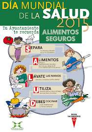

Día Mundial De La Salud
Infografía
Información sobre el día de la salud.
- Salud universal significa que todas las personas tengan acceso, sin discriminación alguna, a servicios de salud integrales de calidad, cuándo y dónde los necesitan, sin enfrentarlas a dificultades financieras. Requiere la definición e implementación de políticas y acciones con un enfoque multisectorial para abordar los determinantes sociales de la salud y fomentar el compromiso de toda la sociedad para promover la salud y bienestar.
- El DMS se celebra después de la “Conferencia Mundial de Atención Primaria de Salud” del 2018 en Astaná y antes de la “Reunión de alto nivel de la Asamblea General de las Naciones Unidas sobre la cobertura universal de salud¨ (UNGA) que se llevará a cabo en Nueva York en septiembre de 2019. Ambos eventos, representan una gran oportunidad para reiterar nuestro compromiso con la salud para todas las personas, enfocándonos en el papel fundamental de la atención primaria de salud en el camino hacia la salud universal.
- El Día Mundial de la Salud (DMS), que se celebra el 7 de abril, este año marca el final de las celebraciones del 70 aniversario de la Organización Mundial de la Salud (OMS). En la Región de las Américas, estas celebraciones se han enfocado en torno a la salud universal, bajo el lema “Salud universal: para todos y todas, en todas partes”.
-
¿Cuándo se celebra y por qué?
-
¿Qué se trata de conseguir con la campaña?
-
¿Qué hace la OMS?
-
Cobertura Sanitaria Universal
-
¿Qué es lo que no incluye la cobertura sanitaria universal?
